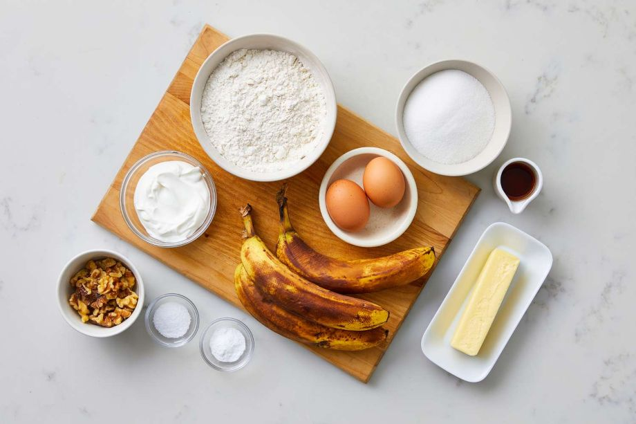

Recipe Information
- Preparation Time: 10 minutes
- Cooking Time: 60-70 minutes
- Servings: 8-10 slices
- Difficulty: Beginner
Nutrition Facts (per serving)
- Calories: 231
- Fat: 9g
- Carbs 35g
- Protein: 4g
Ingredients
You will need the following:
- 2 cups all-purpose flour
- 1 teaspoon baking soda
- 1/4 teaspoon salt
- 1/2 cup butter, melted
- 3/4 cup granulated sugar
- 2 large eggs, beaten
- 1 teaspoon vanilla extract
- 3 to 4 ripe bananas, mashed
- 1/4 cup buttermilk or sour cream
Instructions
Follow these steps for perfect cookies:
- Preheat your oven to 350°F (175°C). Grease and flour a 9x5 inch loaf pan.
- In a medium bowl, whisk together the flour, baking soda, and salt. Set aside.
- In a separate large bowl, mix the mashed bananas, melted butter, sugar, eggs, and vanilla extract.
- Stir the flour mixture into the banana mixture until just combined. Be careful not to overmix!
- Pour the batter into the prepared loaf pan.
- Bake for 60 to 70 minutes, or until a toothpick inserted into the center comes out clean.
- Let the loaf cool in the pan for 10 minutes before transferring to a wire rack to cool completely.
Tips and Notes
For extra flavor, try adding walnuts, pecans, or chocolate chips to the batter before baking. A sprinkle of cinnamon on top also adds a nice touch.
Get more info from the link below
